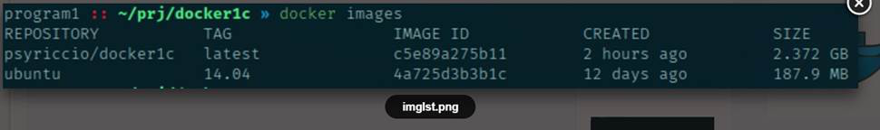
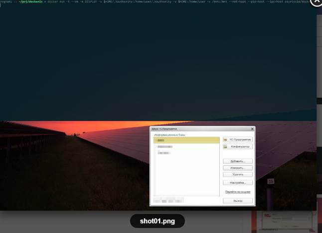
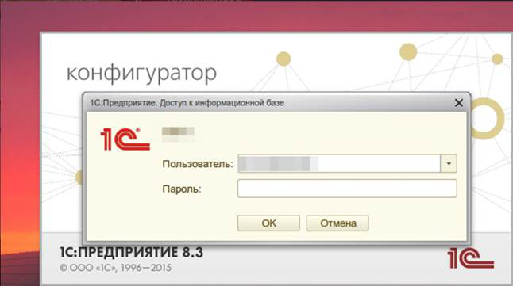
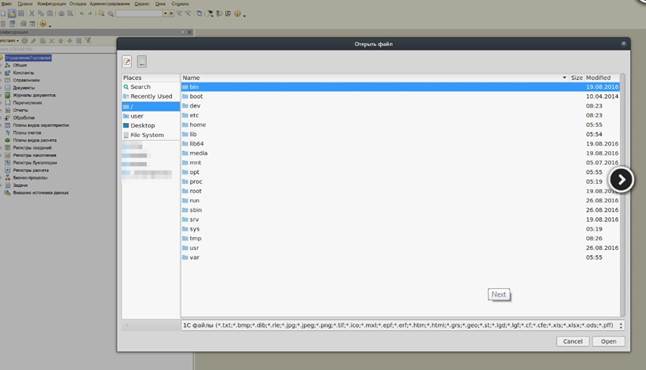

Создаем Docker-контейнер для Linux-версии 1C. Например, чтобы беспрепятственно использовать его на любом Linux дистрибутиве и не держать при этом "дремучих" версий библиотек в системе.
Наверняка каждый из вас, кто использовал 1С клиент на linux, особенно отличном от ubuntu/debian/redhat/centos сталкивался с ворохом проблем (от версии ImageMagic и "странного", если не сказать грубее, использования библиотек до всевозможных "блуждающих глюков", при использовании библиотек, новее, чем доисторические). В статье предлагается один из вариантов решения этих проблем, с использованием Docker. (https://ru.wikipedia.org/wiki/Docker)
Полученный в результате Docker-контейнер построен на базе ubuntu 14.04, включает mscorefonts ( набор стандартных шрифтов от MS; лицензия отличается от LGPL, текст лицензии внутри архива mscorefonts.zip), патчи infinality (для "правильного" рендеринга шрифтов), шрифт Fira Code (хороший, моноширный шрифт для кода)
В репозиторий добавлена light-версия Dockerfile (без тем, шрифтов, infinality, только mscorefonts), находится в директории light.
Прежде всего устанавливаем Docker, например для Arch Linux:
pacman -S docker
gpasswd -a <username> docker
systemctl enable docker
systemctl start docker
Клонируем репозиторий со скриптами, и открываем Dockerfile для настройки:
git clone https://github.com/psyriccio/dck1c.git
cd dck1c
# cd ./light # если нужно взять за основу light-версию
nano ./Dockerfile
Можно избавиться от этих строк (это темы оформления, чтобы докер-приложение смотрелось как родное в системе, можно заменить на свои, распаковываются в /usr/share/themes и /usr/share/icons соответственно):
&& unzip /opt/zukitwo-themes.zip -d /usr/share/themes \
&& unzip /opt/yltra-icons.zip -d /usr/share/icons \
&& unzip /opt/ultraflat-icons.zip -d /usr/share/icons \
В следующих строках указываем версию и архитектуру платформы и кодировку:
ENV PLT_VERSION 8.3.7-1873
ENV PLT_ARCH amd64
ENV LANG ru_RU.utf8
Размещаем в директории ./distr официальные deb-пакеты, соответствующих версий и архитектуры (нужны server, common и client). Запускаем сборку контейнера коммандой:
docker build -t psyriccio/dck1c .
Сборка займет какое-то время. После сборки можем запускать контейнер скриптом ./run.sh или коммандой вида:
docker run -t --rm -e DISPLAY -v $HOME/.Xauthority:/home/user/.Xauthority -v $HOME:/home/user -v /mnt:/mnt --net



